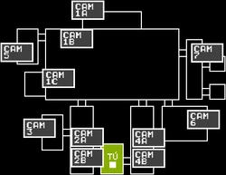

Five Nights at Freddy’s es una saga de videojuegos de terror creada por Scott Cawthon, donde el jugador asume el papel de un vigilante nocturno en una pizzería aparentemente normal: Freddy Fazbear’s Pizza. Sin embargo, durante la noche, los animatrónicos del local cobran vida y comienzan a comportarse de forma aterradora.
El juego combina suspenso psicológico, estrategia y misterio, invitando al jugador a sobrevivir cinco noches (o más) vigilando cámaras de seguridad y administrando la energía para evitar ser atrapado. Con el tiempo, FNaF se convirtió en una de las franquicias de terror más influyentes, expandiéndose a libros, teorías y películas, y creando una enorme comunidad de fans.

